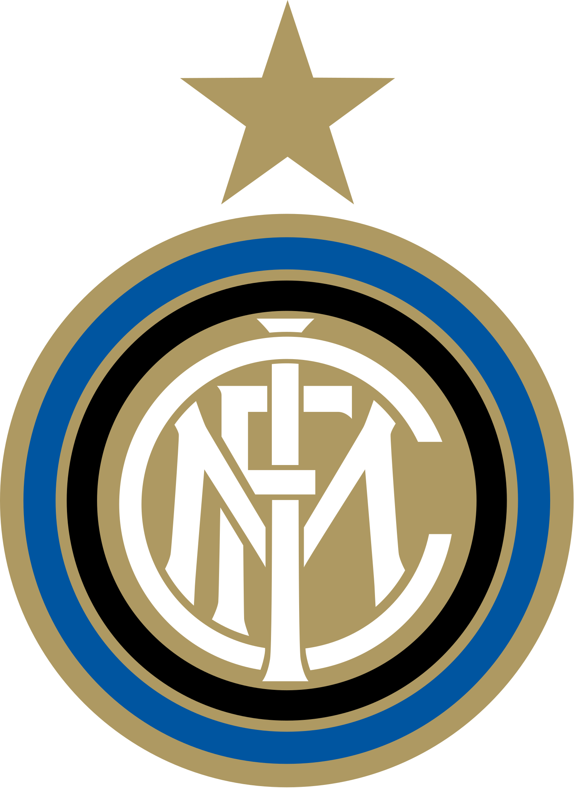

Descrizione

L'Inter e' stata fondata nel'1903
L'Inter e' la terza squadra piu' titolata d'italia
e' la terza piu' titolata d'Italia dopo Juventus e Milan.
Ha vinto 19 scudetti, 8 coppe italia, 6 supercoppe italiane, 3 Champions League, 3 Coppe uefa 2 Intercontinentali e
un Mondiale per Club
E' stata la prima squadra italiana a vincere nella stessa stagione campionato,coppa italia e Champions insieme
il Triplete